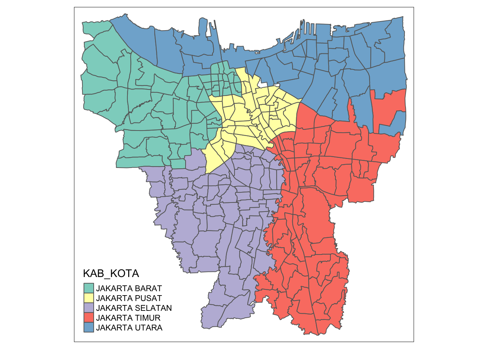

pacman::p_load(sf, funModeling,maptools,raster, spatstat, tmap , tidyverse, sfdep, readxl)Take-home Exercise 2: Spatio-Temporal Analysis
Setting the Context
1 Loading of Data
We will be loading the packages in using the pacman::p_load function. This is the most efficient way of loading the packages.
1.1 Data Sets
We will be using 2 primary sets of data.
| Data set | Source | Description |
|---|---|---|
| Geospatial | INDONESIA GEOSPASIAL | Sub-district of Indonesia |
| Aspatial | Riwayat File Vaksinasi DKI Jakarta | Monthly numbers of vaccinated people from July 2021 to June 2022 (sub-district level) |
1.2 Geospatial Data
We will be loading the Geospatial data while converting it to the proper crs format.
geoJKT <- st_read(dsn = "data/geospatial/", layer = "BATAS_DESA_DESEMBER_2019_DUKCAPIL_DKI_JAKARTA") %>% st_transform(crs=23878)Reading layer `BATAS_DESA_DESEMBER_2019_DUKCAPIL_DKI_JAKARTA' from data source
`/Users/keredpoh/Desktop/keredpoh/IS415-GAA/Take-home_Ex/Take-home_Ex02/data/geospatial'
using driver `ESRI Shapefile'
Simple feature collection with 269 features and 161 fields
Geometry type: MULTIPOLYGON
Dimension: XY
Bounding box: xmin: 106.3831 ymin: -6.370815 xmax: 106.9728 ymax: -5.184322
Geodetic CRS: WGS 841.2.1 Checking Missing Values
We should never assume that the data set provided has no missing values. We check the values in this code chunk and realise that there are actually 14 na values. We will change it in the later portions.
which((is.na(geoJKT)) == TRUE) %>%
length()[1] 141.2.2 Trimming Outer Island
Let us visualise the original polygon. Notice that there are several island that we do not want, as we are only focusing on the main sub-districts of Jakarta, or mainland for short.
qtm(geoJKT)
From using the View() function, we can see the different columns of geoJKT. With the help of Google translate, we can see that KAB KOTA means city district.

From there, we can further derive that KEPULAUAN SERIBU means outer island, which is something that we do not want for the scope of this assignment. We will use filter() to remove it.
geoJKT <- filter(geoJKT, KAB_KOTA != "KEPULAUAN SERIBU")
geoJKTSimple feature collection with 261 features and 161 fields
Geometry type: MULTIPOLYGON
Dimension: XY
Bounding box: xmin: 686587.9 ymin: 9295420 xmax: 718314.5 ymax: 9326648
Projected CRS: DGN95 / UTM zone 48S
First 10 features:
OBJECT_ID KODE_DESA DESA KODE PROVINSI KAB_KOTA
1 25477 3173031006 KEAGUNGAN 317303 DKI JAKARTA JAKARTA BARAT
2 25478 3173031007 GLODOK 317303 DKI JAKARTA JAKARTA BARAT
3 25397 3171031003 HARAPAN MULIA 317103 DKI JAKARTA JAKARTA PUSAT
4 25400 3171031006 CEMPAKA BARU 317103 DKI JAKARTA JAKARTA PUSAT
5 25390 3171021001 PASAR BARU 317102 DKI JAKARTA JAKARTA PUSAT
6 25391 3171021002 KARANG ANYAR 317102 DKI JAKARTA JAKARTA PUSAT
7 25394 3171021005 MANGGA DUA SELATAN 317102 DKI JAKARTA JAKARTA PUSAT
8 25386 3171011003 PETOJO UTARA 317101 DKI JAKARTA JAKARTA PUSAT
9 25403 3171041001 SENEN 317104 DKI JAKARTA JAKARTA PUSAT
10 25408 3171041006 BUNGUR 317104 DKI JAKARTA JAKARTA PUSAT
KECAMATAN DESA_KELUR JUMLAH_PEN JUMLAH_KK LUAS_WILAY KEPADATAN
1 TAMAN SARI KEAGUNGAN 21609 7255 0.36 60504
2 TAMAN SARI GLODOK 9069 3273 0.37 24527
3 KEMAYORAN HARAPAN MULIA 29085 9217 0.53 54465
4 KEMAYORAN CEMPAKA BARU 41913 13766 0.97 42993
5 SAWAH BESAR PASAR BARU 15793 5599 1.76 8971
6 SAWAH BESAR KARANG ANYAR 33383 11276 0.47 71628
7 SAWAH BESAR MANGGA DUA SELATAN 35906 12817 1.31 27463
8 GAMBIR PETOJO UTARA 21828 7328 1.14 19144
9 SENEN SENEN 8643 3049 0.82 10594
10 SENEN BUNGUR 23001 7944 0.67 34418
PERPINDAHA JUMLAH_MEN PERUBAHAN WAJIB_KTP SILAM KRISTEN KHATOLIK HINDU BUDHA
1 102 68 20464 16027 15735 2042 927 15 2888
2 25 52 8724 7375 1842 2041 1460 9 3716
3 131 104 27497 20926 26328 1710 531 42 469
4 170 151 38323 30264 36813 3392 1082 127 495
5 58 36 15006 12559 7401 3696 1602 622 2462
6 113 60 31014 24784 23057 4058 2100 25 4134
7 178 92 33021 26730 23424 5130 2575 27 4740
8 87 83 19275 16478 15355 3061 1838 9 1559
9 56 21 8306 6298 5450 1991 705 115 381
10 128 70 21652 16987 17431 3099 1258 47 1143
KONGHUCU KEPERCAYAA PRIA WANITA BELUM_KAWI KAWIN CERAI_HIDU CERAI_MATI U0
1 2 0 11049 10560 10193 10652 255 509 1572
2 1 0 4404 4665 4240 4364 136 329 438
3 5 0 14696 14389 14022 13450 430 1183 2232
4 1 3 21063 20850 20336 19487 523 1567 3092
5 10 0 7833 7960 7578 7321 217 677 802
6 9 0 16887 16496 15860 15945 381 1197 2220
7 10 0 18338 17568 17239 17198 476 993 2399
8 4 2 10955 10873 10551 10070 305 902 1406
9 1 0 4446 4197 4360 3915 101 267 585
10 1 22 11679 11322 11010 11231 206 554 1679
U5 U10 U15 U20 U25 U30 U35 U40 U45 U50 U55 U60 U65 U70 U75
1 1751 1703 1493 1542 1665 1819 1932 1828 1600 1408 1146 836 587 312 415
2 545 524 521 543 628 691 782 675 607 619 602 614 555 311 414
3 2515 2461 2318 2113 2170 2363 2595 2371 2250 1779 1379 1054 654 411 420
4 3657 3501 3486 3098 3024 3188 3662 3507 3391 2696 1909 1397 970 631 704
5 995 1016 1106 1081 1002 1236 1422 1200 1163 1099 979 880 747 488 577
6 2687 2653 2549 2313 2446 2735 3034 2689 2470 2129 1843 1386 958 554 717
7 2953 2754 2666 2515 2725 3122 3385 3037 2597 2282 1930 1394 932 573 642
8 1625 1625 1718 1612 1612 1707 1806 1746 1672 1427 1258 968 706 412 528
9 758 714 672 583 670 797 796 740 577 495 437 331 234 129 125
10 1794 1797 1789 1667 1773 1957 1952 1785 1667 1489 1219 941 647 386 459
TIDAK_BELU BELUM_TAMA TAMAT_SD SLTP SLTA DIPLOMA_I DIPLOMA_II DIPLOMA_IV
1 3426 1964 2265 3660 8463 81 428 1244
2 1200 481 655 1414 3734 23 273 1241
3 4935 2610 2346 3167 12172 84 1121 2477
4 7328 3763 2950 5138 16320 179 1718 4181
5 2121 1278 1169 2236 5993 43 573 2199
6 5075 3241 4424 5858 12448 85 604 1582
7 6089 3184 3620 6159 14080 83 740 1850
8 3290 1951 1660 3008 8743 63 734 2189
9 1401 768 877 1417 2936 27 280 804
10 3506 2065 1609 2918 10155 79 708 1832
STRATA_II STRATA_III BELUM_TIDA APARATUR_P TENAGA_PEN WIRASWASTA PERTANIAN
1 74 4 3927 81 70 8974 1
2 46 2 1388 10 43 3832 0
3 166 7 5335 513 288 10662 1
4 315 21 8105 931 402 14925 3
5 168 13 2676 156 81 6145 1
6 63 3 5985 132 123 12968 2
7 92 9 6820 79 73 14714 5
8 174 16 3809 145 109 8549 1
9 125 8 1574 369 30 3175 0
10 122 7 3948 609 137 8284 0
NELAYAN AGAMA_DAN PELAJAR_MA TENAGA_KES PENSIUNAN LAINNYA GENERATED
1 0 6 4018 28 57 4447 30 Juni 2019
2 0 6 1701 29 50 2010 30 Juni 2019
3 2 5 6214 80 276 5709 30 Juni 2019
4 0 40 9068 142 498 7799 30 Juni 2019
5 1 49 3135 60 59 3430 30 Juni 2019
6 1 10 6823 48 56 7235 30 Juni 2019
7 2 11 6866 55 75 7206 30 Juni 2019
8 0 54 4731 68 97 4265 30 Juni 2019
9 0 15 1779 89 53 1559 30 Juni 2019
10 0 16 5063 93 146 4705 30 Juni 2019
KODE_DES_1 BELUM_ MENGUR_ PELAJAR_ PENSIUNA_1 PEGAWAI_ TENTARA KEPOLISIAN
1 3173031006 3099 4447 3254 80 48 4 10
2 3173031007 1032 2026 1506 65 5 0 1
3 3171031003 4830 5692 6429 322 366 41 16
4 3171031006 7355 7692 8957 603 612 57 42
5 3171021001 2390 3500 3185 70 65 74 2
6 3171021002 5330 7306 6993 75 73 20 17
7 3171021005 5605 7042 6858 97 48 12 7
8 3171011003 3365 4357 4719 132 89 11 9
9 3171041001 1553 1627 1701 67 91 90 165
10 3171041006 3924 4731 4885 165 174 340 15
PERDAG_ PETANI PETERN_ NELAYAN_1 INDUSTR_ KONSTR_ TRANSP_ KARYAW_ KARYAW1
1 31 0 0 1 7 3 2 6735 9
2 5 0 0 0 3 0 0 3034 2
3 1 1 0 1 4 2 7 7347 74
4 3 2 0 0 3 6 4 10185 231
5 2 1 0 0 0 1 0 4319 16
6 3 1 0 0 1 1 0 9405 13
7 1 1 0 1 7 5 3 10844 10
8 0 2 0 0 0 0 0 6909 24
9 1 0 0 0 2 2 0 1959 17
10 2 0 0 0 2 5 0 5661 29
KARYAW1_1 KARYAW1_12 BURUH BURUH_ BURUH1 BURUH1_1 PEMBANT_ TUKANG TUKANG_1
1 0 23 515 1 0 0 1 0 1
2 0 4 155 0 0 0 1 0 0
3 5 25 971 0 1 0 4 0 0
4 15 35 636 0 0 0 1 0 0
5 0 16 265 1 0 0 7 0 0
6 0 6 1085 0 0 0 5 0 0
7 1 9 652 1 1 0 1 1 0
8 0 11 357 0 0 0 6 0 0
9 2 11 226 0 0 0 1 0 0
10 4 15 542 0 0 0 10 0 0
TUKANG_12 TUKANG__13 TUKANG__14 TUKANG__15 TUKANG__16 TUKANG__17 PENATA
1 0 1 0 1 7 1 0
2 0 1 0 0 4 0 0
3 0 0 0 0 10 0 0
4 0 1 0 1 14 0 0
5 0 0 0 0 2 0 1
6 0 0 0 0 7 0 0
7 0 1 0 1 8 1 0
8 0 0 0 0 8 0 0
9 0 0 0 0 1 0 1
10 0 1 0 0 0 0 0
PENATA_ PENATA1_1 MEKANIK SENIMAN_ TABIB PARAJI_ PERANCA_ PENTER_ IMAM_M
1 0 0 11 4 1 0 0 1 0
2 0 0 1 0 0 0 0 0 0
3 0 0 10 12 0 0 0 0 0
4 0 1 8 28 0 0 0 0 0
5 0 0 4 2 1 0 0 1 0
6 0 0 7 3 0 0 0 0 0
7 0 1 8 4 1 0 0 0 0
8 0 2 9 9 0 0 1 0 0
9 0 0 0 6 0 0 0 0 0
10 0 1 15 7 0 0 2 0 0
PENDETA PASTOR WARTAWAN USTADZ JURU_M PROMOT ANGGOTA_ ANGGOTA1 ANGGOTA1_1
1 2 0 7 6 0 0 0 0 0
2 4 1 1 1 0 0 1 0 0
3 5 0 16 1 0 0 0 0 0
4 33 1 27 5 0 0 0 0 0
5 20 8 4 0 0 0 0 0 0
6 10 0 8 0 0 0 1 0 0
7 8 0 6 1 0 0 0 0 0
8 30 23 9 0 0 0 1 0 0
9 14 0 5 0 0 0 0 0 0
10 14 0 9 1 0 0 0 0 0
PRESIDEN WAKIL_PRES ANGGOTA1_2 ANGGOTA1_3 DUTA_B GUBERNUR WAKIL_GUBE BUPATI
1 0 0 0 0 0 0 0 0
2 0 0 0 0 0 0 0 0
3 0 0 0 0 0 0 0 0
4 0 0 0 0 0 0 0 0
5 0 0 0 0 0 0 0 0
6 0 0 0 0 0 0 0 0
7 0 0 0 0 0 0 0 0
8 0 0 0 0 0 0 0 0
9 0 0 0 0 0 0 0 0
10 0 0 0 0 0 0 0 0
WAKIL_BUPA WALIKOTA WAKIL_WALI ANGGOTA1_4 ANGGOTA1_5 DOSEN GURU PILOT
1 0 0 0 0 0 3 72 1
2 0 0 0 0 0 2 40 0
3 0 0 0 0 0 23 272 2
4 0 0 0 0 0 36 378 3
5 0 0 0 0 0 11 69 0
6 0 0 0 0 0 3 126 0
7 0 0 0 0 0 5 71 0
8 0 0 0 0 0 14 97 0
9 0 0 0 0 0 6 23 0
10 0 0 0 0 0 28 106 0
PENGACARA_ NOTARIS ARSITEK AKUNTA_ KONSUL_ DOKTER BIDAN PERAWAT APOTEK_
1 4 0 1 1 1 16 3 7 0
2 1 0 0 0 0 32 1 0 0
3 8 3 2 0 2 35 9 25 2
4 22 5 3 0 11 68 18 44 3
5 5 4 2 0 4 63 1 3 0
6 5 0 0 0 0 27 3 12 1
7 4 0 0 0 0 32 3 20 2
8 4 5 4 2 6 63 3 7 1
9 3 0 1 0 2 48 10 26 2
10 12 5 2 1 3 60 10 16 3
PSIKIATER PENYIA_ PENYIA1 PELAUT PENELITI SOPIR PIALAN PARANORMAL PEDAGA_
1 0 0 0 0 0 65 0 0 379
2 0 0 0 0 1 3 0 0 126
3 1 0 0 6 0 94 0 0 321
4 0 0 0 16 0 123 0 0 562
5 0 0 0 0 1 61 0 0 412
6 0 0 0 2 0 76 0 0 202
7 0 0 0 4 0 79 0 1 225
8 0 0 0 2 0 63 0 0 271
9 1 0 0 4 0 44 0 0 212
10 0 0 0 2 0 101 0 0 331
PERANG_ KEPALA_ BIARAW_ WIRASWAST_ LAINNYA_12 LUAS_DESA KODE_DES_3
1 0 0 0 1370 94 25476 3173031006
2 0 0 1 611 57 25477 3173031007
3 0 0 0 1723 82 25396 3171031003
4 0 0 0 3099 122 25399 3171031006
5 0 0 22 1128 41 25389 3171021001
6 0 0 3 2321 89 25390 3171021002
7 0 0 0 2677 158 25393 3171021005
8 0 0 2 1018 37 25385 3171011003
9 0 0 1 871 15 25402 3171041001
10 0 0 0 1749 94 25407 3171041006
DESA_KEL_1 KODE_12 geometry
1 KEAGUNGAN 317303 MULTIPOLYGON (((700997 9320...
2 GLODOK 317303 MULTIPOLYGON (((700826.4 93...
3 HARAPAN MULIA 317103 MULTIPOLYGON (((705543.4 93...
4 CEMPAKA BARU 317103 MULTIPOLYGON (((706164.3 93...
5 PASAR BARU 317102 MULTIPOLYGON (((703261.2 93...
6 KARANG ANYAR 317102 MULTIPOLYGON (((702680.1 93...
7 MANGGA DUA SELATAN 317102 MULTIPOLYGON (((702843.6 93...
8 PETOJO UTARA 317101 MULTIPOLYGON (((701480.2 93...
9 SENEN 317104 MULTIPOLYGON (((703947.8 93...
10 BUNGUR 317104 MULTIPOLYGON (((704573.6 93...1.2.3 Filling up NA values
From looking at View(geoJKT), we see that the 14 NA values are associated with rows 243 and 244. Let us insert the necessary values.
geoJKT$KAB_KOTA[243]<-"JAKARTA UTARA"
geoJKT$KAB_KOTA[244]<-"JAKARTA UTARA"
geoJKT$KODE_DESA[243]<-"3188888801"
geoJKT$KODE_DESA[244]<-"3188888802"1.2.4 Visualising of Map
As shown in the plot, there are no NA values, or outer island. that means that we have successfully removed the outer island and NA values.
tmap_mode("plot")
tm_shape(geoJKT) +
tm_polygons("KAB_KOTA")
1.2.5 Choosing relavent fields
For the scope of this assignment, let us retain the first 9 columns from geoJKT using select().
geoJKT <- geoJKT %>%
select(1:9)1.2.6 Translating columns
As the columns are not in English, let us translate and change the name using rename().
geoJKT <- geoJKT %>%
dplyr::rename(
'village_code' = 'KODE_DESA',
'subdistrict' = 'KECAMATAN')1.3 Aspatial Data
As mentioned earlier, we will be using data from Riwayat File Vaksinasi DKI Jakarta. We will be looking at data from the start of July 2021 till the end of June 2022.
1.3.1 Loading Aspatial data
setwd("data/aspatial/")
files <- list.files(pattern = ".xlsx")
for (file in files) {
assign(gsub(".xlsx", "", file), read_excel(file))
}1.3.2 Columns in each data set
We can use names() to view the true nature of each name as it is sometimes hidden when we view the table alone.
names(`Data Vaksinasi Berbasis Kelurahan (01 Desember 2021)`) [1] "KODE KELURAHAN"
[2] "WILAYAH KOTA"
[3] "KECAMATAN"
[4] "KELURAHAN"
[5] "SASARAN"
[6] "BELUM VAKSIN"
[7] "JUMLAH\r\nDOSIS 1"
[8] "JUMLAH\r\nDOSIS 2"
[9] "TOTAL VAKSIN\r\nDIBERIKAN"
[10] "LANSIA\r\nDOSIS 1"
[11] "LANSIA\r\nDOSIS 2"
[12] "LANSIA TOTAL \r\nVAKSIN DIBERIKAN"
[13] "PELAYAN PUBLIK\r\nDOSIS 1"
[14] "PELAYAN PUBLIK\r\nDOSIS 2"
[15] "PELAYAN PUBLIK TOTAL\r\nVAKSIN DIBERIKAN"
[16] "GOTONG ROYONG\r\nDOSIS 1"
[17] "GOTONG ROYONG\r\nDOSIS 2"
[18] "GOTONG ROYONG TOTAL\r\nVAKSIN DIBERIKAN"
[19] "TENAGA KESEHATAN\r\nDOSIS 1"
[20] "TENAGA KESEHATAN\r\nDOSIS 2"
[21] "TENAGA KESEHATAN TOTAL\r\nVAKSIN DIBERIKAN"
[22] "TAHAPAN 3\r\nDOSIS 1"
[23] "TAHAPAN 3\r\nDOSIS 2"
[24] "TAHAPAN 3 TOTAL\r\nVAKSIN DIBERIKAN"
[25] "REMAJA\r\nDOSIS 1"
[26] "REMAJA\r\nDOSIS 2"
[27] "REMAJA TOTAL\r\nVAKSIN DIBERIKAN" 1.3.3 Crafting a function for wrangling
As there are 12 different data sets, data wrangling is not as simple.
we will have to combine them together using a list
select relevant columns
translating to English
mutate a new column for total population & vaccination rate
create a date column for each data set.
wrangle_function <-function(data){
df_name <- deparse(substitute(data))
wrangle<- data %>%
select( `KODE KELURAHAN`,
`WILAYAH KOTA`,
KECAMATAN,
KELURAHAN,
`BELUM VAKSIN`,
SASARAN) %>%
rename(village_code = `KODE KELURAHAN`,
city_region =`WILAYAH KOTA`,
subdistrict = `KECAMATAN`,
district = `KELURAHAN`,
target_vaccination = `SASARAN`,
not_vaccinated = `BELUM VAKSIN`) %>%
mutate(total_population = target_vaccination) %>%
mutate(vaccination_rate = (target_vaccination-not_vaccinated)/total_population)
return(wrangle)
}Let us manually input the month according to chronological order, and run the data frames through the function we just created. We will also be using as.Date() to ensure the date format.
list_month <- list(`Data Vaksinasi Berbasis Kelurahan (01 Juli 2021)`, `Data Vaksinasi Berbasis Kelurahan (1 Agustus 2021)`, `Data Vaksinasi Berbasis Kelurahan (01 September 2021)`, `Data Vaksinasi Berbasis Kelurahan (01 Oktober 2021)`, `Data Vaksinasi Berbasis Kelurahan (01 November 2021)`, `Data Vaksinasi Berbasis Kelurahan (01 Desember 2021)`, `Data Vaksinasi Berbasis Kelurahan (01 Januari 2022)`, `Data Vaksinasi Berbasis Kelurahan (01 Februari 2022)`, `Data Vaksinasi Berbasis Kelurahan (02 Maret 2022)`, `Data Vaksinasi Berbasis Kelurahan (01 April 2022)`, `Data Vaksinasi Berbasis Kelurahan (01 Mei 2022)`, `Data Vaksinasi Berbasis Kelurahan (01 Juli 2021)`)
date <- c("2021-7-1", "2021-8-1", "2021-9-1", "2021-10-1", "2021-11-1", "2021-12-1", "2022-1-1", "2022-2-1", "2022-3-1", "2022-4-1", "2022-5-1", "2022-6-1")
lists <- list()
for (i in c(1:12)){
lists[[i]] <- wrangle_function(list_month[[i]]) |>
mutate(date = as.Date(date[i]),
.before = 1)
}1.3.4 Combination of Aspatial Data
We will combine them into a single data frame using Reduce()
aspatial <- Reduce(rbind, lists)
glimpse(aspatial)Rows: 3,216
Columns: 9
$ date <date> 2021-07-01, 2021-07-01, 2021-07-01, 2021-07-01, 20…
$ village_code <chr> NA, "3172051003", "3173041007", "3175041005", "3175…
$ city_region <chr> NA, "JAKARTA UTARA", "JAKARTA BARAT", "JAKARTA TIMU…
$ subdistrict <chr> NA, "PADEMANGAN", "TAMBORA", "KRAMAT JATI", "JATINE…
$ district <chr> "TOTAL", "ANCOL", "ANGKE", "BALE KAMBANG", "BALI ME…
$ not_vaccinated <dbl> 5041111, 13272, 16477, 18849, 5743, 15407, 12503, 1…
$ target_vaccination <dbl> 7739060, 20393, 25785, 25158, 8683, 22768, 18930, 2…
$ total_population <dbl> 7739060, 20393, 25785, 25158, 8683, 22768, 18930, 2…
$ vaccination_rate <dbl> 0.3486146, 0.3491884, 0.3609851, 0.2507751, 0.33859…1.4 Merging Geospatial and Aspatial Data
We will be merging both data sets by village codes, as it is present in both. Similarly to Geospatial data, we will have to filter out the outer island in Aspatial data, categorised by KAB.ADM.KEP.SERIBU as it is not present in the Geospatial data.
unique(aspatial$city_region)[1] NA "JAKARTA UTARA" "JAKARTA BARAT"
[4] "JAKARTA TIMUR" "JAKARTA SELATAN" "JAKARTA PUSAT"
[7] "KAB.ADM.KEP.SERIBU"We will remove it through filter()
aspatial <- aspatial %>%
filter(city_region != "KAB.ADM.KEP.SERIBU")
unique(aspatial$city_region) [1] "JAKARTA UTARA" "JAKARTA BARAT" "JAKARTA TIMUR" "JAKARTA SELATAN"
[5] "JAKARTA PUSAT" We use setdiff() to see what is present in geoJKT which is not in aspatial.
setdiff(geoJKT$village_code, aspatial$village_code)[1] "3188888801" "3188888802"We will manually add the two sub districts so that both data frames will match after joining.
aspatial <- rbind(aspatial, c("2021-07-01", 3188888801,NA),
c("2021-08-01", 3188888801,NA),
c("2021-09-01", 3188888801,NA),
c("2021-10-01", 3188888801,NA),
c("2021-11-01", 3188888801,NA),
c("2021-12-01", 3188888801,NA),
c("2022-01-01", 3188888801,NA),
c("2022-02-01", 3188888801,NA),
c("2022-03-01", 3188888801,NA),
c("2022-04-01", 3188888801,NA),
c("2022-05-01", 3188888801,NA),
c("2022-06-01", 3188888801,NA),
c("2021-07-01", 3188888802,NA),
c("2021-08-01", 3188888802,NA),
c("2021-09-01", 3188888802,NA),
c("2021-10-01", 3188888802,NA),
c("2021-11-01", 3188888802,NA),
c("2021-12-01", 3188888802,NA),
c("2022-01-01", 3188888802,NA),
c("2022-02-01", 3188888802,NA),
c("2022-03-01", 3188888802,NA),
c("2022-04-01", 3188888802,NA),
c("2022-05-01", 3188888802,NA),
c("2022-06-01", 3188888802,NA))Indeed, there are no NA values. We are good to go.
setdiff(geoJKT$subdistrict, aspatial$subdistrict)[1] "KALIDERES" "PAL MERAH" "SETIABUDI" "PULOGADUNG" "KRAMATJATI"Let us finally join both datasets using left_join() by village code
vaccinationJKT <- left_join(aspatial, geoJKT,
by = c("village_code", "subdistrict")) %>%
mutate(vaccination_rate = as.numeric(vaccination_rate)) %>%
st_as_sf()We will then select the important columns
vaccinationJKT %>%
select(date, village_code, subdistrict, vaccination_rate)Simple feature collection with 3156 features and 4 fields (with 444 geometries empty)
Geometry type: MULTIPOLYGON
Dimension: XY
Bounding box: xmin: 688150.7 ymin: 9295420 xmax: 718314.5 ymax: 9326648
Projected CRS: DGN95 / UTM zone 48S
# A tibble: 3,156 × 5
date village_code subdistrict vaccinat…¹ geometry
<date> <chr> <chr> <dbl> <MULTIPOLYGON [m]>
1 2021-07-01 3172051003 PADEMANGAN 0.349 (((706161.9 9323032, 706…
2 2021-07-01 3173041007 TAMBORA 0.361 (((699268 9320073, 69927…
3 2021-07-01 3175041005 KRAMAT JATI 0.251 EMPTY
4 2021-07-01 3175031003 JATINEGARA 0.339 (((706070 9313044, 70607…
5 2021-07-01 3175101006 CIPAYUNG 0.323 (((711830 9302993, 71181…
6 2021-07-01 3174031002 MAMPANG PRAPATAN 0.340 (((700371 9308387, 70038…
7 2021-07-01 3175051002 PASAR REBO 0.444 (((704532.3 9301182, 704…
8 2021-07-01 3175041004 KRAMAT JATI 0.267 EMPTY
9 2021-07-01 3171071002 TANAH ABANG 0.395 (((700406 9314413, 70040…
10 2021-07-01 3175031002 JATINEGARA 0.276 (((706499.5 9311596, 706…
# … with 3,146 more rows, and abbreviated variable name ¹vaccination_rate